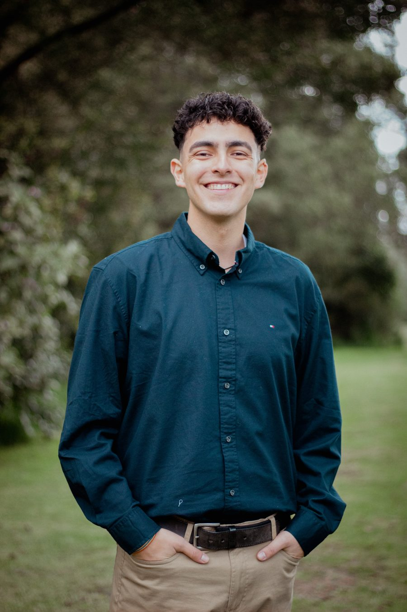
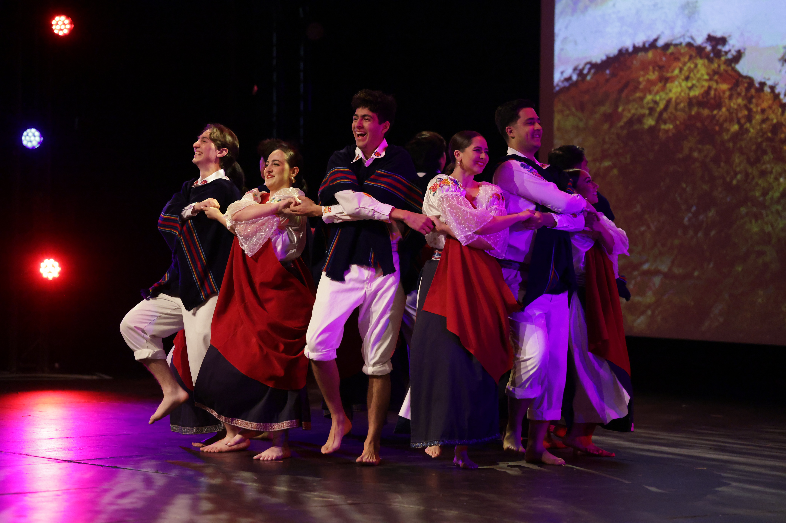
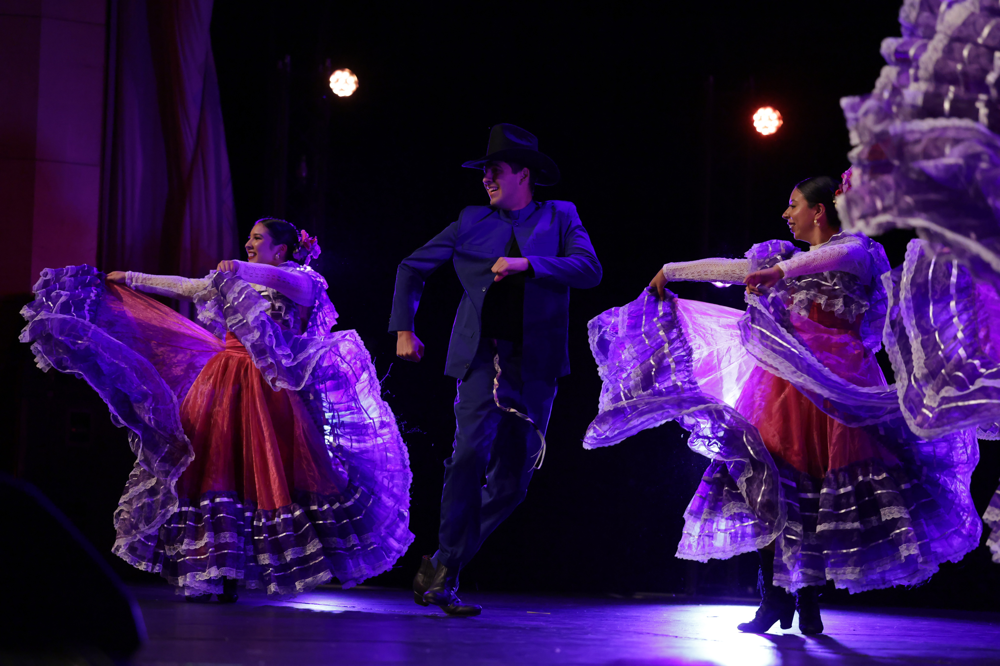
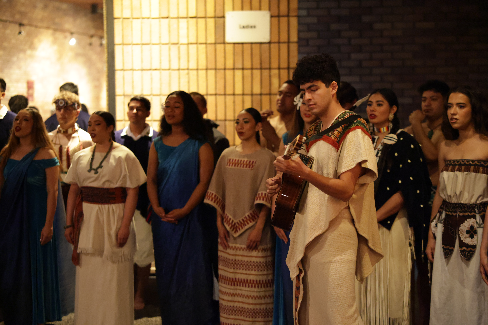
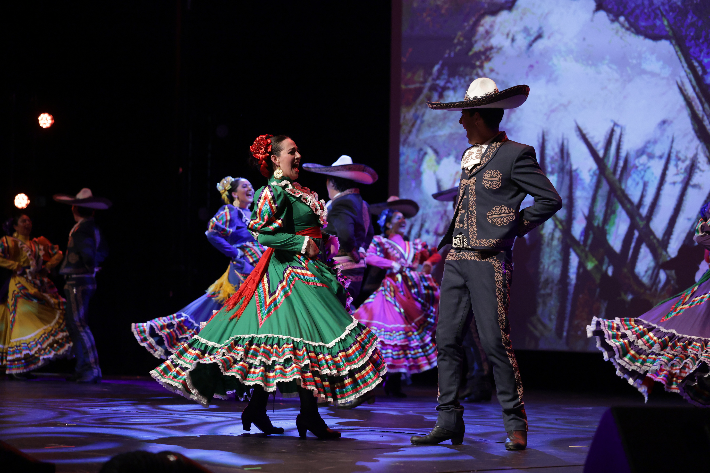
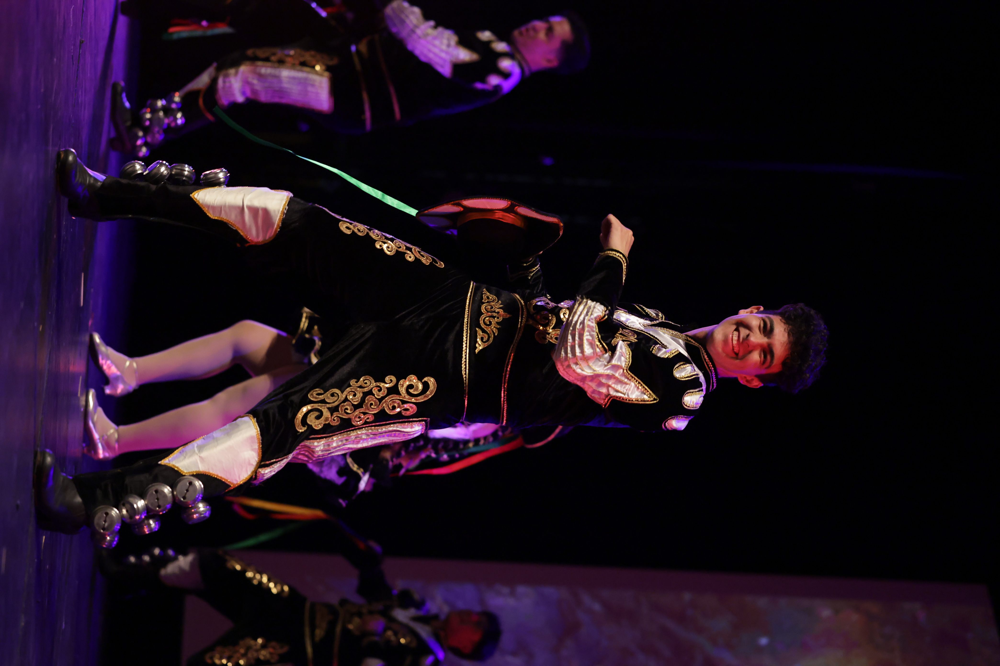
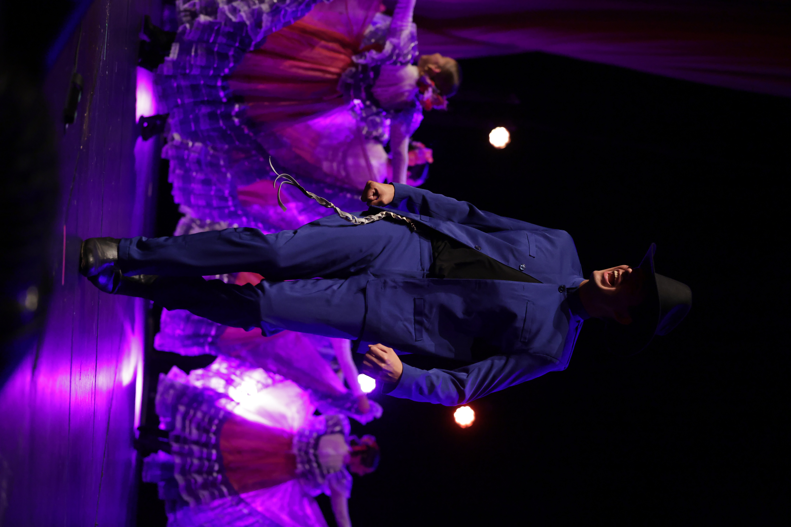

I'm exploring how systems and software can preserve traditions and connect people across backgrounds — not just as a career, but as the impact I want to make.
Ivan Galan — Information Systems

Coursework in database structures & security, data structures, and exploratory data analysis. Member, Association for Information Systems.
Analyzing thousands of student accounting operations and managing $350,000+ through monthly financial reports.
Promoted OneScreen touchscreen technology to 200+ businesses and schools, exceeding sales targets.
Created monthly reports for 50 areas and organized 100+ work reports and medical appointments each month.
Provided English translation for American tourists in Ecuador, doubling the number of visitors served at key sites.
Learned the fundamentals of Python: variables, loops, conditionals, and functions.
Hover a tool to see how I've used it.
Add a photo here: translation work in Ecuador
As I start this STEM-focused program, I want to explore how technology can connect people with culture — preserving meaningful traditions and creating chances for people from different backgrounds to learn from one another.
English · Spanish · Portuguese (learning) — folklórico





